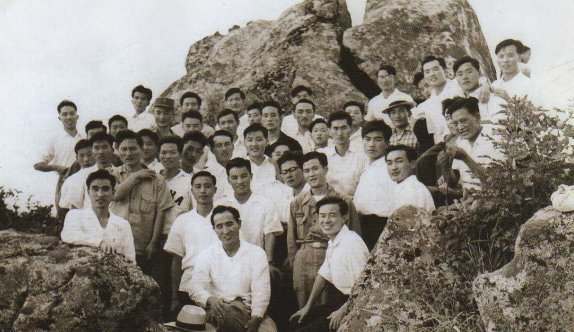
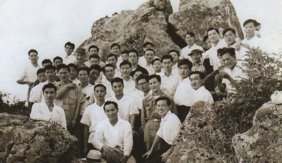

1958
1958 1 jan. Chikukai (regional organisation) skapas. 
17 jan. Herr Sang Ik Choi åker som första utländska missionär till Japan.
Hans japanska namn är Masaru Nishikawa.
1958 1 jan. Chikukai (regional organisation) skapas. 
17 jan. Herr Sang Ik Choi åker som första utländska missionär till Japan.
Hans japanska namn är Masaru Nishikawa.